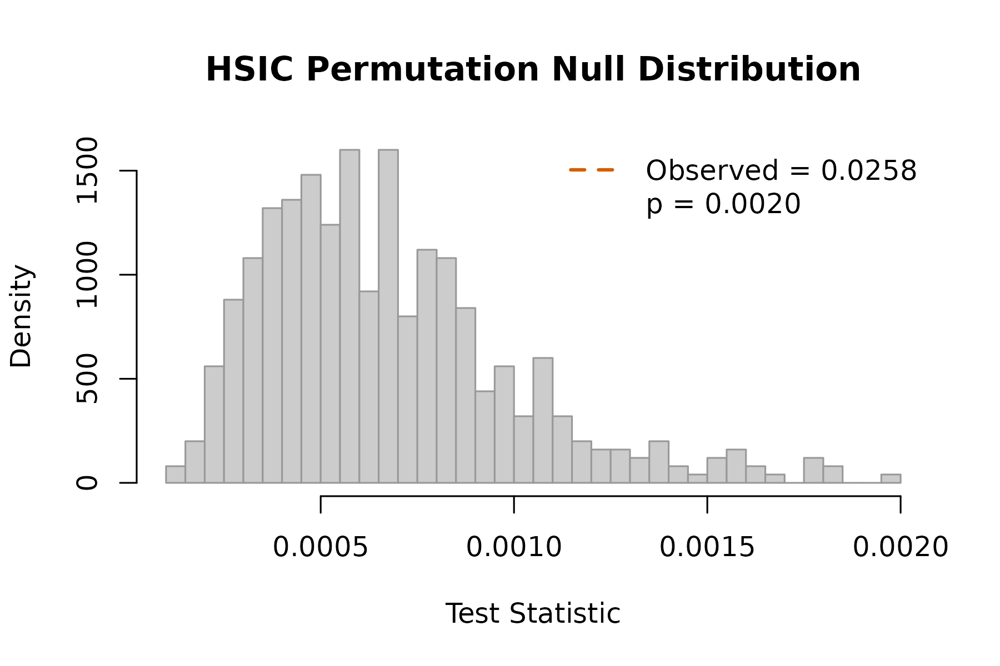

Getting Started with kernR
Max Moldovan
2026-05-31
Source:vignettes/kernR-quickstart.Rmd
kernR-quickstart.RmdWhat is kernR?
kernR provides kernel-based statistical tests for causal inference and distributional comparison. It implements: - HSIC test: independence testing via the Hilbert-Schmidt Independence Criterion - MMD test: two-sample testing via Maximum Mean Discrepancy - bd-HSIC test: causal association testing with backdoor adjustment - DR-DATE / DR-DETT: doubly robust distributional treatment effect tests
This vignette covers the basics: kernels, MMD, and HSIC.
Kernel Basics
A kernel is a function that measures similarity between observations. kernR supports RBF (Gaussian), Matern, linear, and polynomial kernels.
library(kernR)
# Default: RBF kernel with automatic bandwidth (median heuristic)
k <- kernel_spec()
k
#> Kernel specification:
#> Type: rbf
#> Bandwidth: median heuristic
# Fixed bandwidth
k_fixed <- kernel_spec("rbf", bandwidth = 1.5)
k_fixed
#> Kernel specification:
#> Type: rbf
#> Bandwidth: 1.5
# Linear kernel
k_lin <- kernel_spec("linear")
k_lin
#> Kernel specification:
#> Type: linearComputing Kernel Matrices
set.seed(42)
x <- matrix(rnorm(200), 100, 2)
# Compute the 100 x 100 kernel (Gram) matrix
K <- kernel_matrix(x)
dim(K)
#> [1] 100 100
# Visualise a corner
K[1:5, 1:5]
#> [,1] [,2] [,3] [,4] [,5]
#> [1,] 1.0000000 0.4756935 0.3143356 0.8270120 0.4183694
#> [2,] 0.4756935 1.0000000 0.3693844 0.6637695 0.4666851
#> [3,] 0.3143356 0.3693844 1.0000000 0.1985930 0.9776208
#> [4,] 0.8270120 0.6637695 0.1985930 1.0000000 0.2845859
#> [5,] 0.4183694 0.4666851 0.9776208 0.2845859 1.0000000Two-Sample Testing with MMD
The MMD test asks: do two samples come from the same distribution?
set.seed(123)
# Two samples from the same distribution
x <- matrix(rnorm(200), 100, 2)
y <- matrix(rnorm(200), 100, 2)
result <- mmd_test(x, y, seed = 1)
result
#>
#> MMD Test
#>
#> Statistic: -0.004145
#> P-value: 0.7465
#> N: 200
#> Perms: 500
#> Kernel X: rbf (bw = 1.61)The p-value is large — no evidence of different distributions. Now with a mean shift:
y_shifted <- matrix(rnorm(200, mean = 0.5), 100, 2)
result <- mmd_test(x, y_shifted, seed = 1)
result
#>
#> MMD Test
#>
#> Statistic: 0.0789288
#> P-value: 0.0020
#> N: 200
#> Perms: 500
#> Kernel X: rbf (bw = 1.686)The small p-value correctly detects the distributional difference.
Independence Testing with HSIC
HSIC tests whether two variables are independent — including non-linear dependencies that correlation would miss.
set.seed(456)
n <- 300
x <- rnorm(n)
# Non-linear dependence: Y = X^2 + noise
# Note: cor(x, y) is approximately 0 (no linear correlation)
y <- x^2 + rnorm(n, sd = 0.3)
cat("Pearson correlation:", round(cor(x, y), 3), "\n")
#> Pearson correlation: 0.022
# HSIC detects the non-linear dependence
result <- hsic_test(x, y, seed = 1)
result
#>
#> HSIC Test
#>
#> Statistic: 0.0258008
#> P-value: 0.0020
#> N: 300
#> Perms: 500
#> Kernel X: rbf (bw = 0.9644)
#> Kernel Y: rbf (bw = 0.8461)HSIC successfully detects the quadratic relationship even though the Pearson correlation is near zero.
Visualising Results
Every test result can be plotted to see where the observed statistic falls relative to the permutation null distribution:
plot(result)
HSIC permutation null distribution with observed statistic (dashed red line).
Next Steps
-
vignette("kernR-bdhsic")— Causal association testing with bd-HSIC -
vignette("kernR-drtest")— Distributional treatment effect tests -
vignette("kernR-hierarchical")— Tests for hierarchical/nested data
sessionInfo()
#> R version 4.6.0 (2026-04-24)
#> Platform: x86_64-pc-linux-gnu
#> Running under: Ubuntu 24.04.4 LTS
#>
#> Matrix products: default
#> BLAS: /usr/lib/x86_64-linux-gnu/openblas-pthread/libblas.so.3
#> LAPACK: /usr/lib/x86_64-linux-gnu/openblas-pthread/libopenblasp-r0.3.26.so; LAPACK version 3.12.0
#>
#> locale:
#> [1] LC_CTYPE=C.UTF-8 LC_NUMERIC=C LC_TIME=C.UTF-8
#> [4] LC_COLLATE=C.UTF-8 LC_MONETARY=C.UTF-8 LC_MESSAGES=C.UTF-8
#> [7] LC_PAPER=C.UTF-8 LC_NAME=C LC_ADDRESS=C
#> [10] LC_TELEPHONE=C LC_MEASUREMENT=C.UTF-8 LC_IDENTIFICATION=C
#>
#> time zone: UTC
#> tzcode source: system (glibc)
#>
#> attached base packages:
#> [1] stats graphics grDevices utils datasets methods base
#>
#> other attached packages:
#> [1] kernR_0.3.1
#>
#> loaded via a namespace (and not attached):
#> [1] vctrs_0.7.3 cli_3.6.6 knitr_1.51 rlang_1.2.0
#> [5] xfun_0.57 S7_0.2.2 textshaping_1.0.5 jsonlite_2.0.0
#> [9] data.table_1.18.4 glue_1.8.1 htmltools_0.5.9 PESTO_0.4.1
#> [13] ragg_1.5.2 sass_0.4.10 scales_1.4.0 rmarkdown_2.31
#> [17] grid_4.6.0 evaluate_1.0.5 jquerylib_0.1.4 fastmap_1.2.0
#> [21] yaml_2.3.12 lifecycle_1.0.5 compiler_4.6.0 RColorBrewer_1.1-3
#> [25] fs_2.1.0 Rcpp_1.1.1-1.1 farver_2.1.2 systemfonts_1.3.2
#> [29] digest_0.6.39 R6_2.6.1 bslib_0.11.0 gtable_0.3.6
#> [33] tools_4.6.0 pkgdown_2.2.0 ggplot2_4.0.3 cachem_1.1.0
#> [37] desc_1.4.3